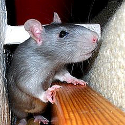
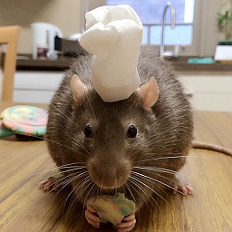
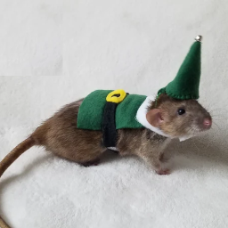
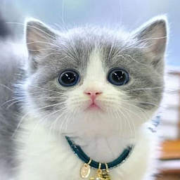

Rat-ified means I squeaked approval
Rattus Adventures

Rats and their adventures in the great indoors!
- Exploring new cardboard box castles
- Mastering the art of the midnight snack raid
- Building epic tunnels in the couch cushions
- Hosting secret dance parties when humans aren't looking
- Perfecting the "puppy dog eyes" for extra treats
-
Training for the Rat Olympics: Synchronized swimming in the
water bowl
Nibbles and Leafs

Creative snacks for the discerning rat!
- Cheese platter with a side of adventure
- Gourmet seed mix with a hint of mystery
- Fresh veggies from the garden (with a dash of mischief)
- Miniature fruit salad for the sweet tooth
- Homemade ratatouille (rat-style)
- Chocolate-covered sunflower seeds (for special occasions)
Tail End Stories

Fashionista Rats: Always in Style!
-
Seasonal wardrobe updates: From cozy sweaters to sleek raincoats
-
Accessorizing with tiny hats and scarves for that extra flair
- Strutting the latest trends on the living room runway
- DIY fashion projects: Turning old socks into chic outfits
- Hosting fashion shows for fellow rat friends
- Mixing and matching patterns like a pro
Cat Napped

Latest Warnings: Watch out Kittys out!
- Cat on the prowl
- Sharp claws are back in action
- Stealthy Stalker
- Sudden Movements
- Unpredictable Behaviour